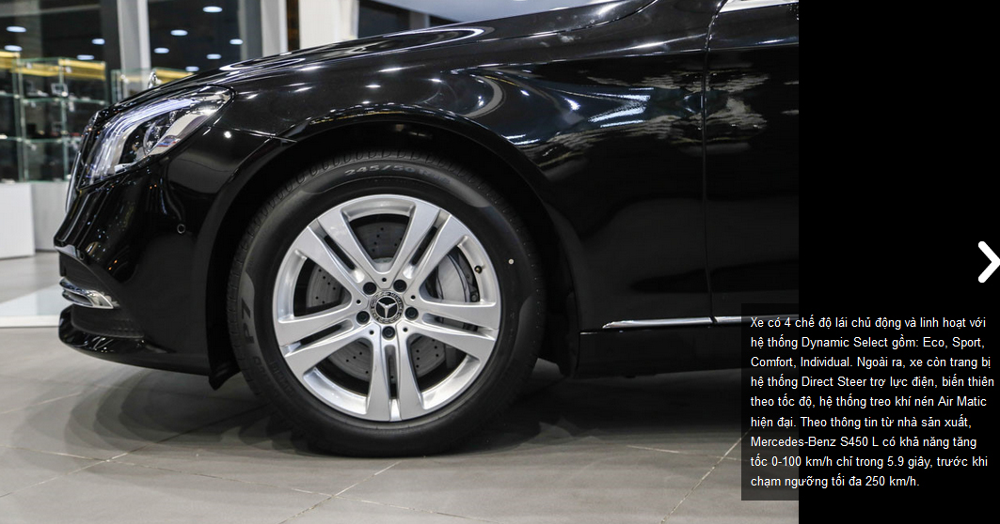

Mercedes S450 2018
Thu hút sự chú ý đầu tiên với phiên bản Mercedes S450 2019
Mercedes S450 2019 chính thức ra mắt thị trường Việt Nam với nhiều công nghệ mới vượt trội đáp ứng xu thế phát triển công nghệ hiện đại. Mercedes S450 ra mắt thay thế cho phiên bản trước đó là Mercedes S400 “ Quyết rũ và lịch lãm đẳng cấp thể hiện ở công nghệ số “.
Khi nhắc tới phiên bản Mercedes S450 2019 này thì khá nhiều người sẽ nghĩ tới hình ảnh của 1 chiếc xe đại diện cho đẳng cấp mới , sang trọng và quý phái hơn rất nhiều , nó mang 1 dáng vẻ không chỉ sang trọng mà còn rất cổ điển , phiên bản Mercedes S400L này thường được hãng cho gọi tắt là phiên bản Mercedes S450 2019 sẽ cuốn hút bạn ngay từ cái nhìn đầu tiên khi bất kỳ ai nhìn vào nó đó nhé .
Giá xe Mercedes S450 2019 và Mercedes S450 Luxury 2019 mới nhất việt nam.
* Mercedes S450 : 4.199.000.000 VNĐ
Mercedes S450 Luxury : 4.759.000.000 VNĐ
Ngoại thất bắt mắt , thu hút mọi người Mercedes S450 2019
Chiếc xe Mercedes S450 2018 này đã khiến cho bất kỳ ai cũng phải chú ý vào nó khi hãng cho sở hữu kích thước tổng thể có phần lớn hơn , với chiều dài x rộng x cao lần lượt là 5246 x 1899 x 1494 (mm), cùng với đó thì dáng vẻ bề ngoài của chiếc xe mang đậm thiết kế trẻ trung , những đường nét sang trọng , đẳng cấp hơn . Ở phần đầu của chiếc xe Mercedes S450 2018 đã gây được sự ấn tượng với mọi người bởi mặt lưới tản nhiệt có kích thước khá lớn , kiểu dáng 4 thanh nan mạ lớp crome sáng bóng ôm trọn lấy logo ngôi sao 3 cánh trên nắp capo phía trước . Cụm đèn phía trước cũng được tạo hình 1 cách tinh tế , hài hòa hơn , cách hãng cho phối hợp giữa hốc hút gió và phần cản trước cũng là điểm nhấn cho phần đầu xe đều được sơn cùng màu với nhau . Bên cạnh đó thì vẻ bề ngoài của Mercedes S450 2018 cũng được hãng cho gây chú ý bởi bộ mâm bánh xe la zăng kích thước khá lớn 18inch kiểu dáng 5 chấu kép với phong cách rất cá tính và mạnh mẽ, cốp xe rộng rãi, thoải mái để đồ đạc.
Xét 1 cách tổng thể thì phiên bản Mercedes S450 2018 này khá hài hòa với những đường nẹp chỉ trên phần cản trước , cản sau và thân xe mạ crome sáng bóng , tất cả đã tạo nên được sự mềm mại , cuốn hút cho chiếc xe này hơn . Xét về các trang thiết bị thì cụm đèn phía trước được hãng cho sử dụng công nghệ đèn led có chức năng thông minh được hãng cho tích hợp thêm đèn led chiếu sáng ban ngày với khả năng tự động mở rộng thêm góc chiếu khi chiếc xe vào khúc cua , giúp người lái mở rộng được tầm nhìn hơn .
Đuôi xe nổi bật với chụp ống xả kép của Mercedes S450 2018 này được mạ bóng tích hợp với cản sau, chiếc xe càng trở nên cá tính và nét tinh tế hơn khi được hãng cho trang bị thêm đèn báo rẽ trên gương chiếu hậu , cùng với đó là cụm đèn phía sau cũng như đèn phanh thứ 3 tích hợp thêm công nghệ led tăng thêm tính tiện ích hơn , hệ thống gương chiếu hậu có thể điều chỉnh và gập điện. Ngoài ra thì màu sơn ngoại thất bên ngoài của chiếc xe Mercedes S450 2018 này cũng mang tới cho khách hàng thêm nhiều sự lựa chọn hơn cho phần ngoại thất của nó , với đầy đủ các màu như màu Trắng Polar (149) thanh lịch hơn , màu Đen Magnetite (183) đẳng cấp , màu Đen Obsidian (197) sang trọng , màu Nâu Peridot (474) trung tính , màu Bạc Iridium (775) ấn tượng , màu Xanh Cavansite (890 ) bắt mắt , màu Bạc Diamond (988)
Khoang nội thất rộng rãi , đầy đủ tiện nghi trên phiên bản Mercedes S450 2018
Do chiều dài cơ sở của chiếc xe Mercedes S450 2018 này ở mức 3165 mm, từ đó sẽ mang tới không gian nội thất thoải mái, rộng rãi , cùng với đó có tới 3 màu sắc lựa chọn cho khoang nội thất của chiếc xe này chính là Đen, Kem Silk, Nâu Nut. Được hãng cho sử dụng chất liệu chủ yếu là da và gỗ cao cấp đã mang lại không gian nội thất thêm phần êm ái , sang trọng hơn rất nhiều . Không gian bên trong của Mercedes S450 2018 cũng gây được sự ấn tượng với khoang cabin được trang bị tới 500 chiếc đèn led khác nhau , trong đó có tới 300 đèn led được hãng cho sử dụng ở hệ thống đèn viền nội thất có tới 64 màu sắc tùy chỉnh theo sở thích riêng của người sử dụng bên trong , tạo những màu sắc sang trọng và thú vị cho nội thất xe.
Bên cạnh đó hãng cũng cho biết sẽ sử dụng vô lăng kiểu dáng 2 chấu được bao bọc bằng da chống thấm mồ hôi và vân tay cùng với ốp gỗ sang trọng , kết hợp cùng 2 màn hình màu TFT kích thước to lớn 12,3inch trên bảng điều khiển hiển thị trên đồng hồ cũng như màn hình truyền thông đa phương tiện . Ngoài ra thì chiếc xe Mercedes S450 2018 cũng có thêm đồng hồ báo giờ kiểu dáng Analogue truyền thống này với ngôi sao Mercedes nằm ở vị trí trung tâm thêm phần bắt mắt hơn . Mặt taplo cùng với thành cửa đều được hãng cho bao bọc bằng da với những đường viền chỉ trang trí thêm phần mềm mại hơn , ốp bệ cửa có thêm logo Mercedes Benz phát sáng hơn đã tạo ra được sự chú ý cho bên trong chiếc xe Mercedes S450 2018.
Ghế người lái được hãng cho tích hợp thêm chỉnh điện , bộ nhớ 3 vị trí cũng như ghế phụ có thể điều chỉnh được từ phía sau chiếc xe , còn ở hàng ghế sau cũng được hãng cho hỗ trợ điều chỉnh điện và bộ nhớ vị trí tương tự như ở ghế lái , có thêm cả tựa tay trung tâm cũng được ốp bằng gỗ trang trí hơn , có thêm ngăn để đồ và khay để cốc ở trên khắp chiếc xe này , tất cả đều mang tới cho khách hàng 1 cảm giác ngồi vừa ý hơn , thoải mái hơn . Một điểm nhấn khác về tiện nghi trên xe Mercedes S450 2018 là ghế sau có tính năng massage cao cấp với hiệu ứng massage chườm đá nóng, mang đến cảm giác thoải mái nghỉ ngơi khi ngồi trên xe. Tương tự như nhiều phiên bản khác của dòng xe S-Class này chính là việc hãng cho trang bị thêm hệ thống giải trí đa phương tiện Comand Online này với đầu đọc DVD , cùng giàn loa công suất khá lớn , kết hợp thêm với nhiều chức năng khác như.
Sự vận hành mạnh mẽ , linh hoạt của Mercedes S450 2018
Mercedes S450 2018 trang bị khối động cơ mạnh mẽ I6 hộp số tự động 9 cấp 9 G-Tronic , chính vì vậy đã mang tới hiệu suất hoạt động khá ổn , khi mà giúp cho chiếc xe có thể sản sinh ra được công suất cực đại lên tới 333 mã lực tại 6000 vòng/phút, có mô-men xoắn cực đại là 4800 Nm tại 1600 – 4000 vòng/phút. Khi được hãng cho kết hợp cùng với hộp số tự động 7 cấp độ này và hệ dẫn động cầu sau hiện nay thì sẽ giúp cho chiếc xe có thể tăng tốc nhanh hơn , chỉ mất 1 khoảng thời gian 6,1 giây để đi từ 0-100km trước khi đạt tới tốc độ tối đa là 250 km/h. Do được hãng cho tích hợp với chức năng Eco Start/Stop này tự động ngắt động cơ khi chiếc xe tạm dừng lại vừa giúp giảm được mức tiêu hao nhiên liệu và khí xả ra ngoài môi trường , nhờ đó chiếc xe có mức tiêu thụ nhiên liệu vào khoảng 8,1 Lít/100 km.
Vận hành mượt mà An toàn cùng Mercedes E300 AMG 2019
An toàn chính là tiêu chỉ hàng đầu mà hãng xe Mercedes nước Đức này đặt ra , khi đó chiếc xe Mercedes S450 2018 này đã được hãng cho trang bị nhiều tính năng an toàn hiện đại nhất chẳng hạn như : chức năng cảnh báo mất tập trung Attention Assist này giúp cảnh báo được người lái khi sắp có sự va chạm xảy ra . Cùng với đó có thêm trang bị camera lùi phía sau sẽ hỗ trợ cho người lái quan sát phía sau khi muốn lùi hoặc đỗ xe 1 cách thuận lợi hơn . Để đảm bảo an toàn và hạn chế chấn thương khi có tai nạn không may xảy ra, Mercedes S450 2018 này cũng được hãng cho trang bị 6 túi khí chính là phía trước , bên hông phía trước và cửa sổ , điều đáng chú ý hơn cả chính là hệ thống Pre Safe này cho hàng ghế phía sau có chức năng chốt dây đai an toàn phát sáng nhất , bộ căng đai trong trường hợp khẩn cấp cũng như túi khí an toàn cho ghế ở 2 bên phía sau , hạn chế sự tổn thương 1 cách tốt nhất.
Ở phiên bản Mercedes S450 2018 luôn mang một sức hút rất lớn trong phân khúc sedan hạng sang cỡ lớn hiện nay , chiếc xe này sẽ đáp ứng được nhu cầu của nhiều khách hàng hiện nay đang rất mong muốn sở hữu được một chiếc xe sang trọng, quý phái hạng sang nhưng giá cả lại quá phải chăng.